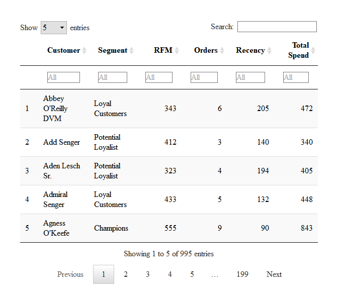

Introduction to RFM
Aravind Hebbali
2017-12-22
Introduction
RFM (recency, frequency, monetary) analysis is a behavior based technique used to segment customers by examining their transaction history such as
- how recently a customer has purchased (recency)
- how often they purchase (frequency)
- how much the customer spends (monetary)
It is based on the marketing axiom that 80% of your business comes from 20% of your customers. RFM helps to identify customers who are more likely to respond to promotions by segmenting them into various categories.
Data
To calculate the RFM score for each customer we need transaction data which should include the following:
- a unique customer id
- date of transaction/order
- transaction/order amount
rfm includes a sample data set rfm_data which includes the above details:
## # A tibble: 4,906 x 3
## customer_id order_date revenue
## <chr> <date> <dbl>
## 1 Mr. Brion Stark Sr. 2004-12-20 32
## 2 Ethyl Botsford 2005-05-02 36
## 3 Hosteen Jacobi 2004-03-06 116
## 4 Mr. Edw Frami 2006-03-15 99
## 5 Josef Lemke 2006-08-14 76
## 6 Julisa Halvorson 2005-05-28 56
## 7 Judyth Lueilwitz 2005-03-09 108
## 8 Mr. Mekhi Goyette 2005-09-23 183
## 9 Hansford Moen PhD 2005-09-07 30
## 10 Fount Flatley 2006-04-12 13
## # ... with 4,896 more rowsRFM Score
So how is the RFM score computed for each customer? THe below steps explain the process:
A recency score is assigned to each customer based on date of most recent purchase. The score is generated by binning the recency values into a number of categories (default is 5). For example, if you use four categories, the customers with the most recent purchase dates receive a recency ranking of 4, and those with purchase dates in the distant past receive a recency ranking of 1.
A frequency ranking is assigned in a similar way. Customers with high purchase frequency are assigned a higher score (4 or 5) and those with lowest frequency are assigned a score 1.
Monetary score is assigned on the basis of the total revenue generated by the customer in the period under consideration for the analysis. Customers with highest revenue/order amount are assigned a higher score while those with lowest revenue are assigned a score of 1.
A fourth score, RFM score is generated which is simply the three individual scores concatenated into a single value.
The customers with the highest RFM scores are most likely to respond to an offer. Now that we have understood how the RFM score is computed, it is time to put it into practice. Use rfm_table() to generate the score for each customer from the sample data set rfm_data.
rfm_table() takes 8 inputs:
-
data: a data set with- unique customer id
- date of transaction
- and amount
-
customer_id: name of the customer id column -
order_date: name of the transaction date column -
revenue: name of the transaction amount column -
analysis_date: date of analysis -
recency_bins: number of rankings for recency score (default is 5) -
frequency_bins: number of rankings for frequency score (default is 5) -
monetary_bins: number of rankings for monetary score (default is 5)
RFM Table
analysis_date <- lubridate::as_date("2006-12-31", tz = "UTC")
rfm_result <- rfm_table(rfm_data, customer_id, order_date, revenue, analysis_date)
rfm_result| customer_id | date_most_recent | recency_days | transaction_count | amount | recency_score | frequency_score | monetary_score | rfm_score |
|---|---|---|---|---|---|---|---|---|
| Abbey O’Reilly DVM | 2006-06-09 | 205 | 6 | 472 | 3 | 4 | 3 | 343 |
| Add Senger | 2006-08-13 | 140 | 3 | 340 | 4 | 1 | 2 | 412 |
| Aden Lesch Sr. | 2006-06-20 | 194 | 4 | 405 | 3 | 2 | 3 | 323 |
| Admiral Senger | 2006-08-21 | 132 | 5 | 448 | 4 | 3 | 3 | 433 |
| Agness O’Keefe | 2006-10-02 | 90 | 9 | 843 | 5 | 5 | 5 | 555 |
| Aileen Barton | 2006-10-08 | 84 | 9 | 763 | 5 | 5 | 5 | 555 |
| Ailene Hermann | 2006-03-25 | 281 | 8 | 699 | 3 | 5 | 5 | 355 |
| Aiyanna Bruen PhD | 2006-04-29 | 246 | 4 | 157 | 3 | 2 | 1 | 321 |
| Ala Schmidt DDS | 2006-01-16 | 349 | 3 | 363 | 2 | 1 | 2 | 212 |
| Alannah Borer | 2005-04-21 | 619 | 4 | 196 | 1 | 2 | 1 | 121 |
rfm_table() will return the following columns as seen in the above table:
-
customer_id: unique customer id -
date_most_recent: date of most recent visit -
recency_days: days since the most recent visit -
transaction_count: number of transactions of the customer -
amount: total revenue generated by the customer -
recency_score: recency score of the customer -
frequency_score: frequency score of the customer -
monetary_score: monetary score of the customer -
rfm_score: RFM score of the customer
Heat Map
The heat map shows the average monetary value for different categories of recency and frequency scores. Higher scores of frequency and recency are characterized by higher average monetary value as indicated by the darker areas in the heatmap.

Bar Chart
Use rfm_bar_chart() to generate the distribution of monetary scores for the different combinations of frequency and recency scores.

Histogram
Use rfm_histograms() to examine the relative distribution of
- monetary value (total revenue generated by each customer)
- recency days (days since the most recent visit for each customer)
- frequency (transaction count for each customer)


Scatter Plots
The best customers are those who:
- bought most recently
- most often
- and spend the most
Now let us examine the relationship between the above.
Recency vs Monetary Value
Customers who visited more recently generated more revenue compared to those who visited in the distant past. The customers who visited in the recent past are more likely to return compared to those who visited long time ago as most of those would be lost customers. As such, higher revenue would be associated with most recent visits.

Frequency vs Monetary Value
As the frequency of visits increases, the revenue generated also increases. Customers who visit more frquently are your champion customers, loyal customers or potential loyalists and they drive higher revenue.

Recency vs Frequency
Customers with low frequency visited in the distant past while those with high frequency have visited in the recent past. Again, the customers who visited in the recent past are more likely to return compared to those who visited long time ago. As such, higher frequency would be associated with the most recent visits.

Segments
Let us classify our customers based on the individual recency, frequency and monetary scores.
| Segment | Description | R | F | M |
|---|---|---|---|---|
| Champions | Bought recently, buy often and spend the most | 4 - 5 | 4 - 5 | 4 - 5 |
| Loyal Customers | Spend good money. Responsive to promotions | 2 - 5 | 3 - 5 | 3 - 5 |
| Potential Loyalist | Recent customers, spent good amount, bought more than once | 3 - 5 | 1 - 3 | 1 - 3 |
| New Customers | Bought more recently, but not often | 4 - 5 | <= 1 | <= 1 |
| Promising | Recent shoppers, but haven’t spent much | 3 - 4 | <= 1 | <= 1 |
| Need Attention | Above average recency, frequency & monetary values | 2 - 3 | 2 - 3 | 2 - 3 |
| About To Sleep | Below average recency, frequency & monetary values | 2 - 3 | <= 2 | <= 2 |
| At Risk | Spent big money, purchased often but long time ago | <= 2 | 2 - 5 | 2 - 5 |
| Can’t Lose Them | Made big purchases and often, but long time ago | <= 1 | 4 - 5 | 4 - 5 |
| Hibernating | Low spenders, low frequency, purchased long time ago | 1 - 2 | 1 - 2 | 1 - 2 |
| Lost | Lowest recency, frequency & monetary scores | <= 2 | <= 2 | <= 2 |
Segmented Customer Data
We can use the segmented data to identify
- best customers
- loyal customers
- at risk customers
- and lost customers
Once we have classified a customer into a particular segment, we can take appropriate action to increase his/her lifetime value.

Segment Size
Now that we have defined and segmented our customers, let us examine the distribution of customers across the segments. Ideally, we should have very few or no customer in segments such as At Risk or Needs Attention.
## # A tibble: 8 x 2
## Segment Count
## <chr> <int>
## 1 Loyal Customers 278
## 2 Potential Loyalist 229
## 3 Champions 158
## 4 Hibernating 111
## 5 At Risk 86
## 6 About To Sleep 50
## 7 Others 48
## 8 Needs Attention 35Average Recency
We can also examine the average frequency across the different segments. As you can observe, average recency in days is higher for customers in the segments such as Needs Attention, Hibernating, At Risk and About To Sleep.
rfm_segments %>%
group_by(segment) %>%
select(segment, recency_days) %>%
summarize(mean(recency_days)) %>%
rename(segment = segment, avg_recency = `mean(recency_days)`) %>%
ggplot(aes(segment, avg_recency)) +
geom_bar(stat = "identity", fill = brewer.pal(n = 8, name = "Set1")) +
xlab("Segment") + ylab("Average Recency") +
ggtitle("Average Recency by Segment") +
coord_flip() +
theme(
plot.title = element_text(hjust = 0.5)
)
References
- Data Mining: Concepts and Techniques , Second Edition , Jiawei Han University of Illinois at Urbana-Champaign Micheline Kamber .
- https://joaocorreia.io/blog/rfm-analysis-increase-sales-by-segmenting-your-customers.html
- http://www.sciencedirect.com/science/article/pii/S1877050910003868